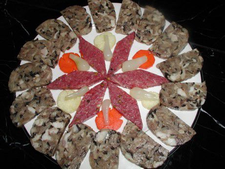

Cùng bắt tay làm thử thôi nào!
Nguyên liệu:
- Lưỡi lợn: 1 cái (tầm 400 gam).
- Tai lợn: 2 cái (tầm 600 gam).
- Mũi lợn: 1 cái (tầm 500 gam).
- Nấm hương+ mộc nhĩ: 200 gam.
- Hành khô.
- Gia vị: Hạt tiêu, nước mắm, bột ngọt
Các bước làm giò thủ
- Lưỡi lợn: Các bạn trần qua nước sôi trước để dễ cạo phần màng trắng trên lưỡi. Sau khi cạo sạch xong, các bạn bóp thêm muối vào và rửa sạch.
- Với tai lợn và mũi lợn thì các bạn chỉ cần bóp muối và rửa sạch.
- Nấm hương, mộc nhĩ: Ngâm nước sôi. Khi chúng đã nở, các bạn rửa sạch rồi thái chỉ. Ngoài ra nếu không muốn ngâm các bạn có thể cho trực tiếp vào nồi đun qua đến khi nước sôi thì tắt bếp nhưng theo mình cách tốt nhất là ngâm nước sôi.
- Hành khô: Bóc vỏ, rửa sạch, thái lát mỏng.
- Đặt xoong lên bếp, cho lưỡi, tai, mũi vào luộc qua đi rồi bỏ ra ngâm nước lạnh luôn. Khi chúng đã nguội hết, các bạn mang ra thái mỏng nhưng phải theo kiểu to bản.
- Sau khi thái xong, các bạn mang tai, mũi, lưỡi, nấm hương, mộc nhĩ thêm cùng một ít nước mắm, bột ngọt, hạt tiêu bóp đều lên cho gia vị ngấm đều và ướp trong khoảng 40-50 phút.
- Sau khi các nguyên liệu đã ngấm đều gia vị, các bạn cho vào chảo xào kĩ lên, khi thấy hơi xém vàng là được. Chý ý là phải xào kĩ như vậy mới bảo quản được lâu hơn. Xào xong, các bạn cho ngay vào khuôn làm giò, nén chặt không được để nguội rồi mới cho vào.
- Tuy nhiên khi đã cho vào khuôn thì phải để một lúc nguội nguội mới cho vào tủ lạnh.
Món giò của bạn được coi là thành công khi mà thái ra miếng không bị vỡ ăn thơm thơm, giòn giòn.
Có thể giò lạc sẽ không phù hợp với người không thích ăn thịt lạc còn giò thủ lại hoàn toàn phù hợp khẩu vị của tất cả mọi người. Đặc biệt cách làm giò thủ không phải khó khăn gì nên hãy làm thử nhé!
Chúc các bạn thành công với cách làm giò thủ của mình!
P/S: Bạn hãy chia sẻ công thức nấu món ăn hấp dẫn này cho người thân, bạn bè để ai cũng có thể trở thành chuyên gia đầu bếp của gia đình. Nếu bạn có những câu hỏi thắc mắc hay muốn chia sẻ những bí quyết nấu ăn ngon với amthucgiadinh.net thì hãy để lại comment phía dưới nhé!